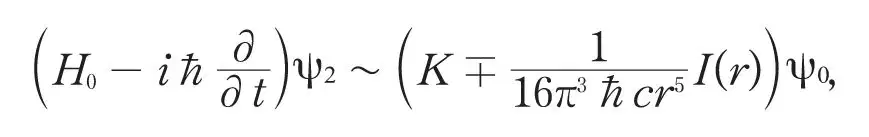
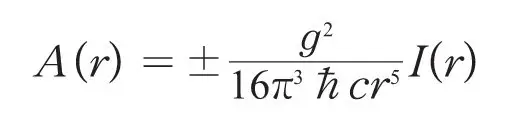
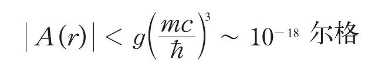

英文
英文塔姆
编者按
苏联物理学家伊戈尔·塔姆是核科学界的先驱，并在之后获得了诺贝尔奖，这篇文章中他评论了恩里科·费米新近的β衰变理论，费米假定质子和中子可以相互转化，并在此过程中放出或者吸收电子、正电子和中微子。事实正如塔姆所质疑的那样，费米的理论方案表明束缚原子核的作用力可能是一种原子核粒子间的“交换作用”，这一想法源于对电磁相互作用中以光子交换过程为媒介的交换的直接类比，但是对于这种相互作用大小的粗略估算得到数值过小。塔姆的结果表明物理学家仍在寻找另一种基本相互作用，而这种相互作用后来被称为强相互作用。 英文
最近，费米[1]成功地发展了一套关于β衰变的理论。这个理论基于这样的假设：中子转变为质子或质子转变为中子都是有可能的，并且在此过程中伴随着一个电子和一个中微子的产生或消失。 英文
这一理论意味着推导出质子和中子之间的交换力是有可能的，交换力这一概念在某种程度上是由海森堡唯象地引入的。（这个概念也曾独立地出现在我的朋友伊万年科的脑海中，我曾有机会和他讨论过这个问题。）设有两个重粒子a和b，a处于中子态，b处于质子态。如果a变成一个质子，而b变成一个中子，系统能量保持不变。这样，系统的这两个简并态就可以通过以下两个步骤联系起来：首先，中子a放出一个电子和一个中微子，变成一个质子；其次，质子b再吸收这些轻粒子，变成一个中子。整个系统的能量在中间态（与色散理论相比）并不守恒。正电子和中微子的发射和再吸收同样也有可能发生[2]，因此以这种方法所考虑的系统的两个简并态就劈裂成交换能符号不同的两个能态。 英文
由于轻粒子（ψ场）在重粒子相互作用中所扮演的角色与光子（电磁场）在电子相互作用中所扮演的角色非常类似，所以，我们可以采取量子电动力学中推导库仑力表达式的方法来研究我们的问题。 英文
设ψ = ψ0 + gψ1 + g2ψ2 + . . .，其中g为费米常数（～4×10–50 尔格·立方厘米），用微扰理论，且只保留初末态中与轻粒子的缺失有关的那部分ψ，可以得到：

其中，K是一个无限大的常数，r表示a和b之间的距离，I(r)是r的单调下降函数，当r≪ħ/mc时，I(r)等于1（m是电子的质量）。不考虑常数K，如果将交换能A(r)直接引入重粒子的波动方程，我们将会得到相同的结果。A(r)的表达式为：

A(r)的符号取决于由a和b决定的ψ的对称性。将ħ、c和g的值代入上式，我们得到：
|A(r)|≪10－85r－5 尔格
因此，如果中子和质子的距离r ~ 10–13厘米量级，那么A(r)的值就太小了，以致于无法解释中子和质子之间已知的相互作用。 英文
如果中子和质子之间的质量差大于电子和中微子的质量和，那么重粒子发射轻粒子的过程就可能不违反能量守恒原理，但是，相应的交换能的值仍然太小：

我们得到的负面结果表明，不是费米理论需要根本的修正（因为使结果有实质上的改变绝非易事），就是中子和质子之间作用力的源头根本不像海森堡最初设想，且由费米细致考虑的那样存在于它们的相互转变之中。 英文
（王静 翻译；王乃彦 审稿）